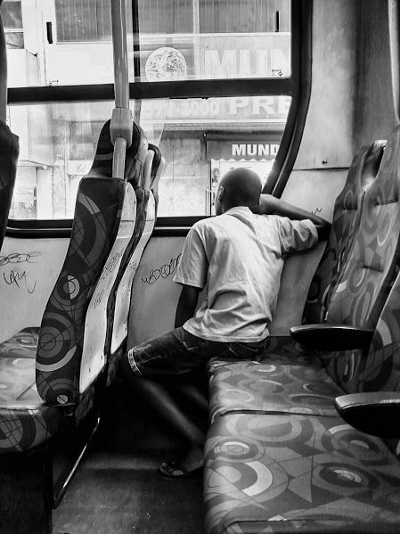

O corpo entregue ao cansaço revela o que a cidade esconde: a exaustão cotidiana de quem vive nos trajetos.
A imagem fala de tempo roubado, de jornadas longas, de sonhos que cochilam no trajeto até o centro.
Na marginalidade geográfica e social, o transporte público é mais que deslocamento: é extensão da casa, do trabalho, da resistência.
Dormir, aqui, é um ato de sobrevivência. É pausa no caos urbano que nunca foi feito pra ele.